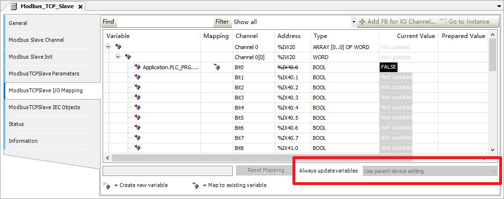

5 进阶调试
5.1 断点、流控制及跟踪
在单片机和计算机编程中，断点（Breakpoint）是非常好用的工具，因为单片机资源较少，调试时无法在线显示变量值（会影响单片机运行速度）。而CODESYS可以在线查看程序中的变量实际值，也可以用监视窗口监视多个变量而不影响PLC的运行。此外，PLC处在断点会导致轴控制急停、总线停止输出等问题，所以在实际应用中很少使用断点进行调试，但在一些For、While循环的调试中仍有必要使用断点。
流控制（Flow Control）可以看到PLC是否经过某段代码，经过的代码（变量）会被涂绿色。但可能会导致PLC抖动增加，使用较少。
在线查看的刷新周期
CODESYS查看在线值时，IDE会将当前视图内和当前激活Watch内的变量发给RTE去查询实际值，查询周期约200ms。低于200ms周期的信号或短脉冲信号可能会有闪烁或不真实的值。
跟踪（Trace）是最常用的调试功能，相当于时基为依附任务周期的示波器，可以添加多个变量并记录它们的变化过程。一般用于监视CASE的分步、BOOL、REAL、INT等变量值。要使用跟踪时，在Application下添加Trace（无论在线与否都可以添加），选择依附的任务，添加变量并下载跟踪即可。
跟踪的缓存大小
在使用跟踪时我们会遇到之前记录的波形被顶掉，这就是缓存大小不足的情况。可以修改trace configuration-Advanced里的Trace editor buffer size per variable大小。
5.2 变量的在线操作
我们可以对一个变量做赋值，例如iTest默认值为0，我们可以在任意时间对其赋值为2（给定预备值Prepared value，然后使用快捷键CTRL+F7）。
变量的复写
需要注意的是，手动赋值过程是在一个PLC周期结束后执行一次，强制赋值是在每一个PLC周期结束后执行。如果代码或设备中有对该变量做写入的操作，则实际值不会改变，甚至显示值会有错误（复写操作）。请尽量避免使用强制赋值（快捷键F7）。
例如，以下代码中，无论对iTest赋值还是强制赋值，都无法改变iResult的值。
VAR
iTest: INT;
iResult: INT;
END_VAR
iTest:=2;
iResult:=iTest;
复写操作在调试中经常遇到，我们要尽量避免一个周期内对变量的多个操作，如果在周期开始时对变量写TRUE，周期中间读取了这个变量，周期结束时对这个变量写FALSE，则在监视和TRACE中都无法观察到该变量被写过TRUE的步骤，增加调试难度。
在创建总线对象后，如果地址没有被使用的地方，则会按默认优化不显示实际值，此时变量的实际值为灰色，表明该变量不是实际值。要强置设备同步IO，需要在IO映射的右下角选择使能2。

5.3 交叉引用、转到定义和全局搜索
交叉引用（Cross References）是非常好用的工具，在变量上右键 - Browse - Display Cross References即可在交叉引用列表中查看所有对该变量操作的位置和读写类型，双击可以直接跳到对应的程序、设备或visu元素上。几乎所有的PLC软件都具有交叉引用功能。
转到定义（Go to Definition）常用于转到变量的定义或库定位。当用于定位到变量定义时，直接在变量上右键 - Browse - Go to Definition。当用于库定位时，在类型上转到定义（如在pwr: MC_Power;的MC_Power上转到定义），即可跳转到库中对应功能或结构体，可在文档中看到功能解释。
搜索功能在CODESYS软件中可定义整个项目搜索、已激活的编辑器搜索和当前编辑器搜索，这在大型项目的移植和变量替换中非常有用，也可以用于大CASE的跳转（例如在当前编辑器搜索580:可以直接跳到580步）。
5.4 异常和内核转储
CODESYS会自动监控几种异常情况，如除零、无限循环和CPU占用过高等。发生异常后PLC会完全停止在异常点，此时可以用软件登陆上即可看到问题发生的具体代码位置。此外，还可以用内核转储将异常状态存储下来，方便之后复盘问题。
最常见的异常原因为除零，请在做除法运算前用LIMIT限制或IF判断，尽量避免异常的发生。此外，引用空指针或错误指针也容易导致异常，编写相关代码时应当小心谨慎。
5.5 日志和实时性
日志是检查系统问题的首要位置，您可以在Device - Log页里检查设备日志。某些总线/设备还有独立的日志。
您可以在任务配置Task Configuration - Monitor中监控任务的Jitter。监控前需要在任务上手动复为一次，以避免登录、下载和刚开始运行时带来的Jitter差异。一般来说，RTE的Jitter（Min. Jitter 和Max. Jitter）应当在±80us内，arm平台或Linux系统会差一些，极限值不应超过±150us。
5.6 无报警的异常情况
虽然CODESYS有上传记录、CRC等保护等功能，但某些情况下还是会发生一些意料之外的异常，且这种异常没有正确的报警显示，此处例举几个：
- 使用SOFTMOTION时，在线修改过代码后轴的监控界面很可能不更新，此时要关闭轴监控界面，重新打开。
- 某些时候Visualization中的图片会有错误显示，需要在Device-Files页刷新设备文件列表，删除visu文件夹并重新下载PLC。
- 设备关联某个变量在线修改后，可能实际并没有关联上，且没有任何异常显示。可以Online-Reset Origin后重新下载PLC。
- 在大型逻辑、运动控制和visu复合项目中，有时候IDE会频繁报错。新建一个项目，将原项目中所有内容复制过去即可。
- 在使用EtherCAT时，若RTE不支持新版的EtherCAT_Master设备，则编译不报警，登录报警未解引用。需要用旧版本设备/旧编译器或更新RTE。